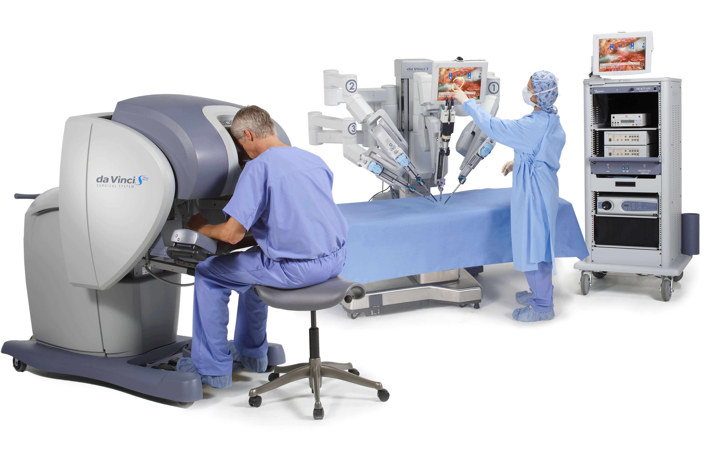

Disruptive Technology in Health
Home
About
Communication/Media
Education
Government
Reference

Disruptive Technology in Health/Medicine
Vain Scanner
There is hardly any adult in the developed world who has never been the subject of a blood draw. The easiest way to access medical information about a patient is through a blood test(The Medical Futurist, 2016).
However, many have serious fears about it. On the one hand, it might be pretty scary since it is carried out with a needle. On the other hand, sometimes it takes a lot of time and more than one attempts until the nurse or the phlebotomist finds the appropriate vein to carry out the procedure. Many factors make blood tests complicated(The Medical Futurist, 2016).
Are Vein Scanners the answer to all our problems with blood tests?
For nurses and phlebotomists, the main problem is that they do not possess X-ray eyes. Most of the time it is difficult for medical professionals to find the right vein – because the skin is too thin or too sensitive, the veins have a strange position or the nurse or the phlebotomists have the worst day ever and miss the vein in spite of every attempt(The Medical Futurist, 2016).
A simpler and cheaper solution would be scanners that let phlebotomists see the veins below the skin – without the need to develop X-ray eyes. There are already such examples such as VeinViewer(The Medical Futurist, 2016).
How does VeinViewer work?
The VeinViewer device attaches to a movable arm that can be wheeled into position, to keep it steady while observing a patient’s arm. The information is captured and projected digitally in real time directly onto the surface of the skin through near-infrared light which is absorbed by blood and reflected by surrounding tissue. It provides a real time accurate image of the patient’s blood pattern. VeinViewer allows you to see blood patterns up to 15 mm deep and clinically relevant veins up to 10 mm. Special features might allow a clinician to find turns in a person’s veins, called bifurcations, and valves(The Medical Futurist, 2016).

The medical professional can also take up to 200 static images of patient vasculature – the arrangement of blood vessels in the body. With the utilization of VeinViewer, clinicians can potentially avoid complications from accidental puncture and they can improve the total vascular access procedure, not just the stick(The Medical Futurist, 2016).
Wide range of medical robotics in healthcare:Surgical Precision
Surgery is an unpleasant experience at best. The waiting lists can be long depending on available manpower and resources. daVinci helps alleviate the problem. It has been used in a wide variety of fields from head and neck to urologic surgery. The surgeon is in complete control of the system at all times, however as the machine has greater reach and flexibility, smaller incisions made with more precision are enough to access the problem areas(The Medical Futurist, 2016).
© Johnor Livingston, September 2016